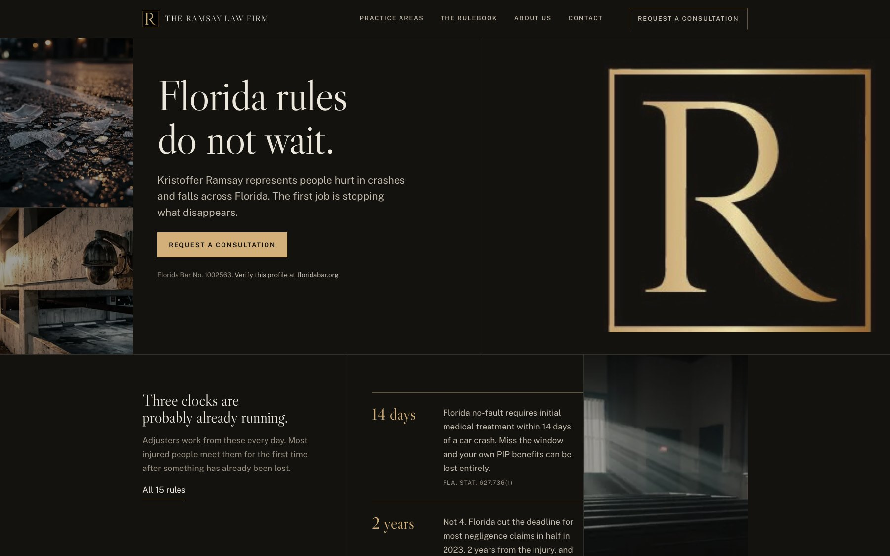

Custom vs. template law firm website: what actually changes, checked on a live site.
Most agencies say “custom.” Few define it, and fewer let you check. This page separates a template or theme site from a hand-coded custom site across 9 differences, gives you an outside test for each one, answers the 8 questions a firm should ask any agency, and walks the full chain from agency to named client to case study to live domain on 1 personal injury firm site you can open yourself.
Custom is a fact about where the site started.
The word gets attached to everything from a $99 theme with a new logo to a site written line by line for 1 firm. The useful definition is narrower: a custom site starts from the firm's practice, matters, and market, and the design and page structure are built to fit them. A template site starts from someone else's layout and the firm's content is fitted into it.
A template or theme site
A pre-built layout, usually a WordPress theme, a page-builder kit, or a Wix or Squarespace design, chosen from a gallery and filled in. The structure, the section order, and most of the code were decided before anyone at the agency knew the firm's name. Practice areas often live as a dropdown menu and a paragraph each. It can look professional, and for a small firm with a narrow scope it can be the right call.
A custom hand-coded site
The layout, the page set, and the code are produced for the firm. Priority practice areas are real pages with their own URLs. The first screen is written around what the firm's clients search, not around a stock courthouse photo. The code the firm receives at the end is the code on the server, with no builder license or theme subscription sitting between the firm and its own website.
What custom does not mean
It does not mean expensive, and it does not require avoiding WordPress. A custom design can run on WordPress, and a $30,000 site can be a theme. The test is whether the design and the structure started from the firm. The checks in the table below let a firm answer that question about any agency's work, including TMN's, without taking anyone's word for it.
9 differences, each one checkable from outside.
The last column is the point of the table. Open any firm site the agency claims, view the page source, and run the check. A claim you cannot check is a preference, not a difference.
| Difference | Template or theme site | Custom hand-coded site | How to check from outside |
|---|---|---|---|
| 1. Where the design starts | A gallery layout picked before the firm was known. Sections arrive in a fixed order and the firm's content is trimmed to fit. | A blank file. The first screen, the section order, and the page set are decided from the firm's matters, market, and the questions its clients search. | View source and search for wp-content/themes/, elementor, et_pb, wixstatic, or squarespace. A theme name in the path answers the question. |
| 2. Practice-area architecture | Practice areas are menu items. Several share 1 “Practice Areas” page, or each gets a paragraph and a stock image. | Each priority matter type is its own crawlable page with its own URL, heading, and substance, so a search for that matter has a page to land on. | Open the site's /sitemap.xml and count the practice-area URLs. Then open 2 of them and see whether the content differs beyond the heading. |
| 3. Legal copy and citations | Placeholder or generic attorney copy: “aggressive representation,” “we fight for you,” no citations, nothing a reader can verify. | Plain-language explanations of the deadlines and rules that govern the firm's matters, cited to statutes or reported authority, prepared for the firm's review. | Pick a substantive legal statement on the site and look for the citation. Then paste 1 sentence into a search engine and see how many other firm sites carry it. |
| 4. Page weight and scripts | A theme loads its whole feature set whether the page uses it or not: builder CSS, slider libraries, icon fonts, jQuery, and plugin scripts. | 1 stylesheet and 1 script written for the site. Nothing loads that the page does not use, which is most of what makes a site fast on a phone. | Open browser developer tools, load the homepage, and count requests and total transfer size on the Network tab. Compare 2 sites side by side. |
| 5. Third-party dependencies | Plugins, builder services, chat widgets, form vendors, and tracking tags, each a separate company with its own uptime, terms, and data handling. | Each external request is a decision. A typical TMN firm site loads 1 analytics tool and nothing else from a third party, and the intake form posts to the firm's own domain. | On the Network tab, sort by domain. Count how many domains other than the firm's own receive a request. The number is the dependency count. |
| 6. Advertising-rule review | Theme demo copy ships with “expert,” “best,” and results language baked in. Removing it is the firm's problem after launch. | Copy is drafted without unsupported expertise or outcome claims, the responsible lawyer and office are visible, and the draft goes to the firm and its counsel for review before launch. | Search the site for “expert,” “specialist,” “best,” and “guarantee.” Then look for the lawyer's name, office, and bar number on the first screen. The advertising rules page has the full checklist. |
| 7. Ownership and exit | The theme license, the builder subscription, or the platform account belongs to the agency or the platform. Leaving means rebuilding. | The firm receives the website files and project assets after full payment, subject to the signed agreement. The site can move to any host with any developer. | Ask for the contract clause that says what the firm receives at the end and when. Then check the domain registration is in the firm's name, not the agency's. |
| 8. Ongoing cost | Often a monthly subscription that bundles hosting, the theme, and “SEO,” with the site tied to continued payment. | A flat project fee. Care is optional and separate. TMN publishes $2,250, $3,750, and $5,000+ project tiers and site care from $50 per month, with no retainer requirement. | Multiply the monthly fee by the initial term, add setup, and ask what stops when payment ends. Compare that total with a project fee plus optional care. |
| 9. Timeline | Fast to fill in, and fast is the pitch. The time goes into fitting the firm to the theme rather than the other way round. | TMN's Starter and Full builds typically target a first full draft 72 hours after kickoff, and Custom Studio builds a first review in 7 to 10 days. Hand-coded does not have to mean slow. | Ask for the date the agency's most recent firm site launched and the date the project started. Then open the site and confirm it is live. |
The template column describes common patterns, not every theme site. Some firms are well served by a template, and some agencies deliver custom work on WordPress. The checks are the point: run them on any site an agency shows you, and run them on the TMN build below.
Agency, named client, case study, live domain. Every link, open to you.
The strongest test of any agency's legal portfolio is whether you can go from the agency to a named firm, to a published account of the work, to the firm's own domain, and find the agency credited there. TMN has 1 law firm client. Here is that chain, with what a visitor could confirm on Sep 3, 2026.

| Link in the chain | What was checked | Boundary |
|---|---|---|
| Named client | The Ramsay Law Firm, P.A., a personal injury practice in Fort Lauderdale, Florida. Attorney Kristoffer S. Ramsay. Named on this site, on the case study, and on the firm's own domain. | 1 firm. TMN does not publish a client count it cannot support. |
| Published case study | Present. The Ramsay Law Firm case study describes the scope, the rulebook of cited Florida deadlines, the advertising review inputs, and what was deliberately left out. It claims no rankings, lead volume, or case outcomes. | The case study is TMN's account. The live site is the evidence. |
| Live domain | ramsayinjurylaw.com returns the firm's site. Title: Fort Lauderdale Personal Injury Lawyer, The Ramsay Law Firm, P.A. Launched August 2026. The public WHOIS record lists the domain as created Aug 14, 2026 with the attorney as registrant, not TMN. | Domain and hosting are the firm's. Status on any later date is whatever the firm has chosen. |
| Public credit | Present. The site's footer credits TMN Creative and links to tmncreative.com, so the attribution lives outside this website. | The firm controls its footer and could remove the credit at any time. |
| The lawyer is checkable | Florida Bar No. 1002563 appears on the first screen with a link to the Florida Bar's member directory, where standing is maintained by the Bar. | The Bar directory, not TMN or the firm, is the source for current standing. |
| Check 1: design origin | No theme markers. The homepage source contains no wp-content, elementor, Wix, or Squarespace paths. It loads 1 stylesheet, /site.css, and 1 first-party script, /site.js. | Source inspection of the homepage and contact page on the review date. |
| Check 2: practice-area architecture | 16 URLs in the public sitemap, including 9 practice-area pages under /practice/ (car, rideshare, truck, motorcycle, pedestrian and bicycle, slip and fall, negligent security, defective products, wrongful death), plus the rulebook, attorney, contact, disclaimer, and privacy pages. | Sitemap contents as published by the firm on the review date. Page count does not predict rankings. |
| Check 4 and 5: weight and dependencies | Homepage HTML under 20 KB. 1 third-party domain, Fathom Analytics. 0 iframes and 0 forms on the homepage. The contact page's intake form posts to the firm's own domain, with no third-party form vendor script. | Counts from the delivered HTML on the review date. No speed score is published here without a dated production test. |
| Check 6: advertising review | Responsible lawyer, office, and Bar number visible. The reviewed pages carry no outcome claims, no testimonials, and no expertise or “best” language. Copy was prepared against the Florida Bar's website checklist for the firm's review. | Only the firm and its counsel can confirm jurisdiction-specific approval. TMN does not approve advertising. |
| What is not claimed | Nothing about results. No rankings, traffic, lead counts, or case outcomes are published for this site anywhere on tmncreative.com. The site launched in August 2026 and there is no performance history to report. | If that changes, it will be published with a date and a method. |
Open the live firm site, view the source, open /sitemap.xml, and repeat every check. Read the full case study, the 8-trait review of the same site, or how to verify any claim TMN makes.
8 questions a firm should ask, answered on the record.
These are the questions that separate a custom studio from a theme shop. Ask them of every agency you interview. TMN's answers are below so you can hold TMN to them.
Is the design created from a blank canvas or a prebuilt theme?
Blank canvas. Every TMN site is hand-coded HTML and CSS written for the firm. No theme, no page builder, no builder license. The check is in the table above: the Ramsay homepage loads 1 stylesheet and 1 script, both first-party.
Who owns the design, code, content, and installation?
The firm, after full payment and subject to the signed agreement. TMN delivers the website files and project assets. There is no proprietary CMS and no platform account the firm has to keep paying to keep its site. The domain is registered to the firm, which is the case on the Ramsay build per its public WHOIS record.
Can we use our own photographer, videographer, and brand identity?
Yes, and TMN prefers it. TMN does not sell photography and does not use stock photos posing as the firm's team. When no current headshot existed for the Ramsay build, no attorney photo shipped rather than a substitute. The firm's logo and identity are used as supplied or built into the scope.
How do you structure pages for each matter type?
Each priority matter gets its own crawlable page with a plain-language explanation of the rules that govern it, cited, and a single next step. On the Ramsay site that is 9 practice pages under /practice/ plus a rulebook of 15 cited Florida deadlines and rules. Page count follows the firm's actual practice, not a template's slots.
How do you handle multiple cities or offices?
As real pages when they are in the approved scope, each with the office, the responsible lawyer, and matter-specific content, not a find-and-replace of the city name. Structured data is used only where it matches visible, supportable facts. TMN does not promise rankings, and ad management is not part of a website build.
What is the conversion strategy for calls and consultations?
1 primary action, repeated, chosen by what the firm actually answers fastest. A firm that answers the phone gets click-to-call first. A new firm with no published number, like Ramsay at launch, gets a form-first path that posts to its own domain. Not 4 competing widgets on 1 page.
Can we leave later without losing the website?
Yes. Because the firm holds the files and the domain, the site can move to any host and any developer. Site care from TMN is month to month and optional. No retainer is required to keep a TMN site online.
What is the all-in price?
Published: Starter Refresh $2,250, Full Site Rebuild $3,750, Custom Studio Build $5,000+. Factual copy prepared for the firm's review is part of the build. Photography, paid media, and ongoing SEO are not. Optional site care starts at $50 per month, and AI search optimization is $350 per month on top of care. Final scope and number are confirmed in writing before work begins. See what law firm websites cost.
What firm owners ask before choosing.
Is a template law firm website a bad choice?
Not always. A solo practice with 1 matter type, a small budget, and no plan to compete for search traffic can be well served by a clean template, and an honest agency will say so. The problems show up when a firm has several practice areas that each deserve a real page, when the theme's demo copy carries expertise or results language the firm's rules do not allow, when the site depends on a builder subscription the firm does not control, or when the firm later wants to leave and discovers it owns nothing portable. The 9 checks on this page tell you which situation you are in.
Does a custom law firm website cost more than a template?
Often, but not necessarily, and the gap is smaller than most firms expect. TMN's hand-coded builds start at $2,250 for a Starter Refresh, $3,750 for a Full Site Rebuild, and $5,000+ for a Custom Studio Build, with no theme license, no builder subscription, and no retainer required. Many template-based legal packages are sold as a monthly fee that bundles hosting and marketing, so compare the total over the initial term against a flat project fee plus optional site care from $50 per month. The law firm website cost guide walks through that comparison with a dated third-party benchmark.
How long does a custom law firm website take?
TMN publishes its timing: a free homepage preview in 48 hours, a first full draft typically targeted at 72 hours after kickoff for Starter Refresh and Full Site Rebuild projects, and a first review typically targeted at 7 to 10 days for a Custom Studio Build. Launch timing then depends on the firm's review of the copy and disclosures, which is the right place for a legal site to spend time. The Ramsay Law Firm site was built and launched in August 2026 with an 18-page hand-coded scope, a rulebook of 15 cited Florida rules, and a launch gate that held every page behind noindex until the firm approved it.
Can a custom site run on WordPress?
Yes. Custom describes where the design and structure came from, not the software underneath. An agency can write a custom theme for WordPress and deliver a genuinely custom site. The reason TMN hand-codes instead is what the firm inherits: 1 stylesheet and 1 script written for the site, no plugin updates, no builder license, fewer third-party requests, and files the firm can move anywhere. If a firm needs a content editor, that is a scope conversation, not a reason to accept a theme.
How do I tell whether an agency's portfolio is real?
Follow the chain. Start at the agency's portfolio and look for a named firm. Open the agency's case study for that firm and see whether it describes the actual scope or just shows a screenshot. Open the firm's own domain and confirm the site is live and matches. Look for the agency credited on the firm's site, usually in the footer, because that corroboration lives outside the agency's control. Then run the outside checks in the table above on that site. An agency that publishes 1 fully checkable chain has shown you more than one that claims hundreds of clients with no names.
Does TMN do ongoing SEO for law firms?
TMN builds the search foundations into the site itself: real practice-area pages, cited plain-language content, structured data that matches visible facts, clean crawlable HTML, and sitemaps. Optional site care starts at $50 per month, and AI search optimization is $350 per month on top of care for firms that want ongoing monitoring of crawler access, business facts, structured data, indexing, and pages worth citing. TMN does not sell link building or paid media management, and does not promise rankings or a recommendation in any AI system. No agency can honestly promise those.
Want to see what custom looks like for your firm before you commit?
Tell us the practice areas and the market. We’ll build a free homepage preview in 48 hours, hand-coded, so you can run every check on this page against it. No retainer. No pressure.